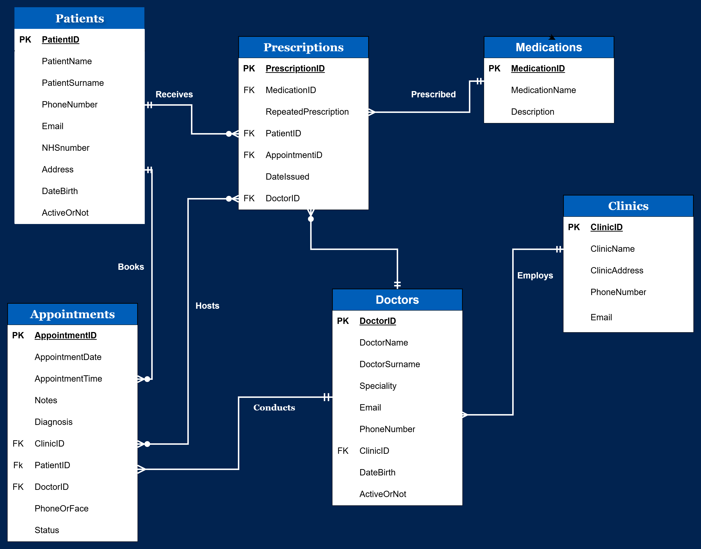
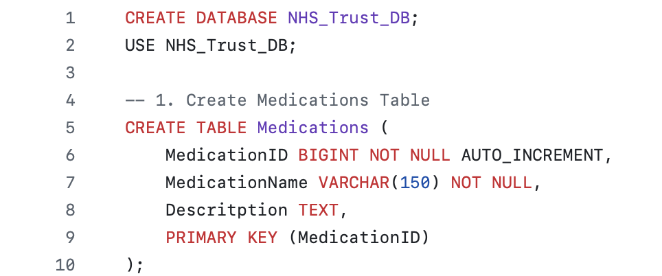
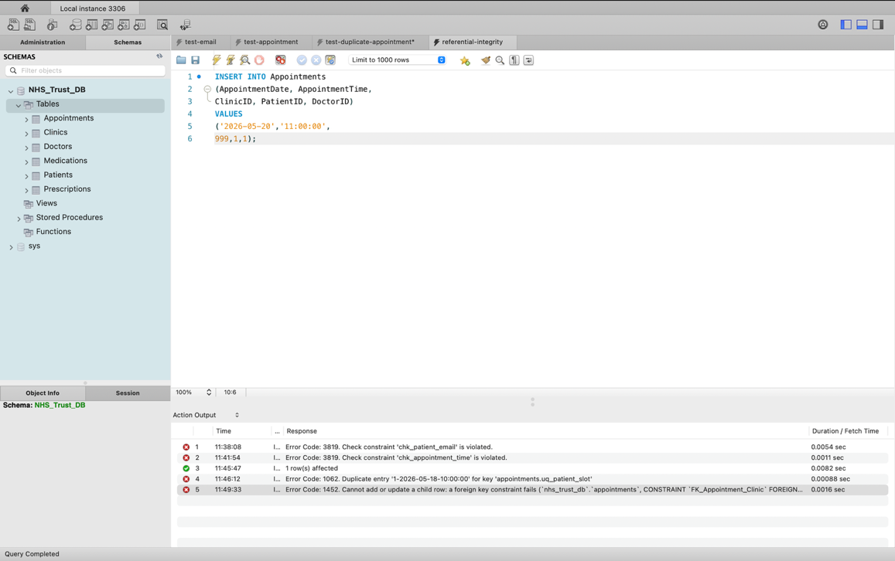

A normalised MySQL database for a simulated NHS UK digital transformation initiative, replacing patient records kept in Word and Excel with a secure, relational system built for multi-user access across NHS Trusts.

As part of a simulated NHS UK digital transformation initiative, patient records were being kept in Microsoft Word and Excel, a structure riddled with multi-valued fields (a single "MedicationList" cell holding several drugs at once), duplicated patient and clinic details across every appointment record, and deletion anomalies where removing one appointment could wipe out reference data needed elsewhere.
Design and build a centralised relational database that replaces those manual records, reducing redundancy, enforcing data integrity, and securely managing patient, clinician, and prescription information for multiple users across NHS Trusts.
CREATE TABLE DDL, AUTO_INCREMENT primary keys, foreign keys, and UNIQUE/CHECK constraints (valid email formats, sensible date-of-birth ranges).UNIQUE constraint.A patient can be prescribed many medications, and a medication is prescribed to many patients, a many-to-many relationship a simple foreign key can't express. I resolved it with a Prescriptions junction table linking Patients, Medications, Appointments and Doctors, which also gave me a natural place to store prescription-specific data like the issue date and whether it's a repeat prescription.
Enforcing least-privilege access meant a patient should see their own medications but nothing else, while admins need broader access. I implemented this with MySQL role-based access control and verified it by logging in as each role in turn. For example, confirming a patient account could query the Medications table but was denied access to other tables entirely.
A naive query built by concatenating user input is vulnerable to injection: an input like ' OR '1'='1 can turn a login check into a condition that's always true. I demonstrated the vulnerability first, then rebuilt the affected queries as prepared statements, so user input is always treated as data rather than executable SQL.


The finished database meets its brief: a structured, efficient, and secure system for handling healthcare data, with normalisation and constraints keeping it consistent, and role-based access control plus encryption protecting patient data in line with the Data Protection Act 2018.
This project moved database design from theory into practice, translating a messy, real-world scenario into normalised entities and relationships, then proving the design worked through deliberate testing rather than assuming it. It sharpened my thinking around normalisation trade-offs, business-rule constraints, and database security (RBAC, hashing, encryption, injection prevention), skills directly relevant to a database administration or backend-focused role.
If I extended it further, the next additions would be automated backup and recovery, a BI dashboard for reporting, and query optimisation for larger datasets.